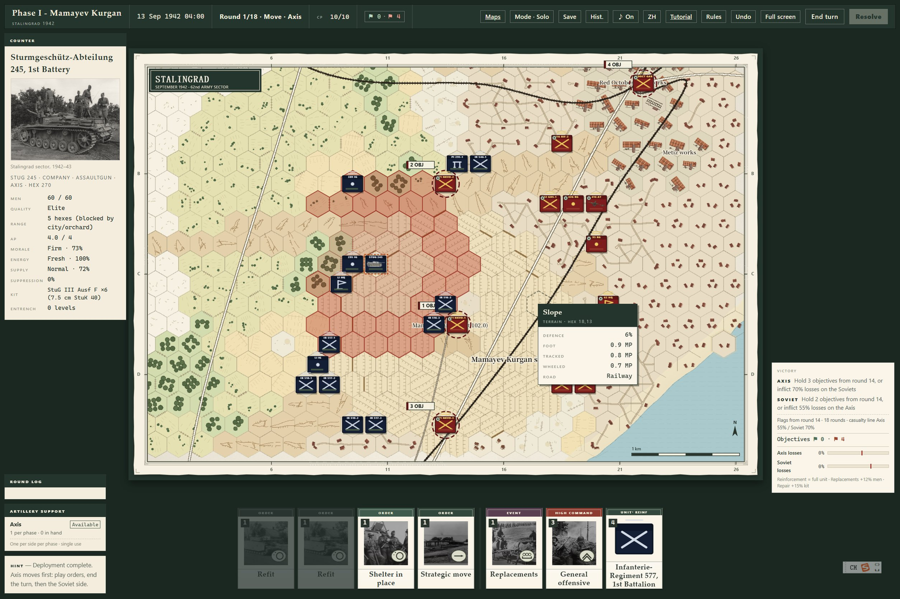
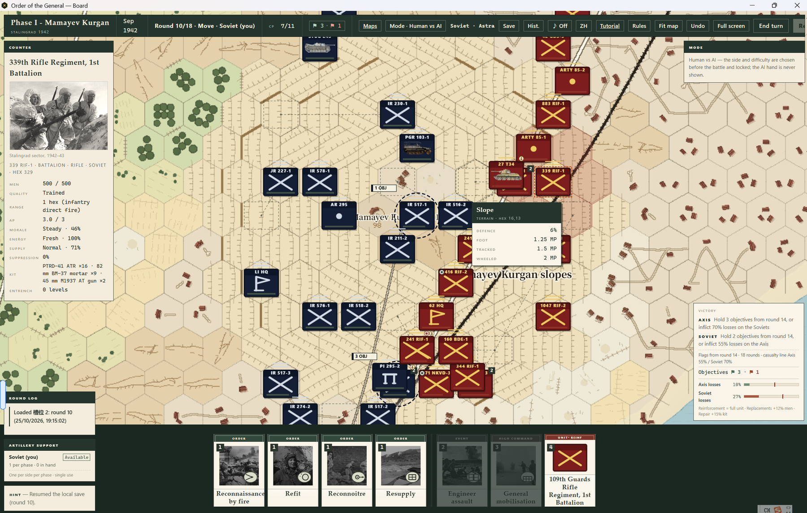
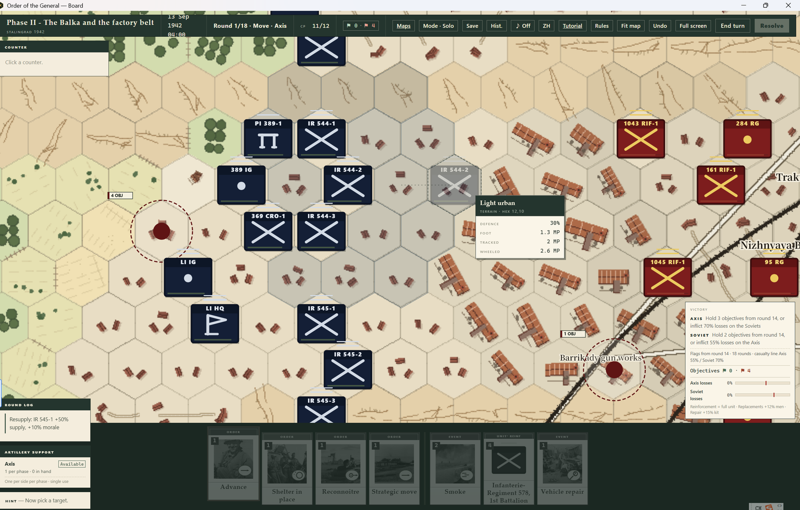
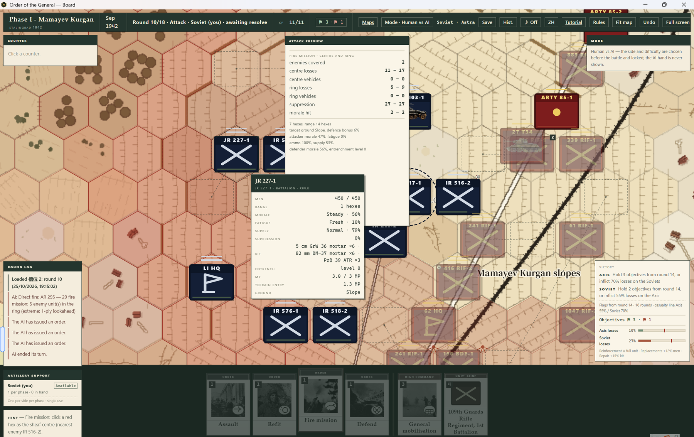
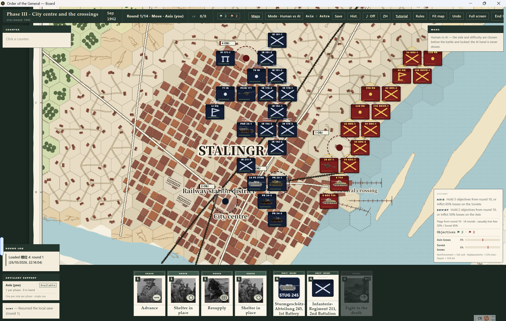
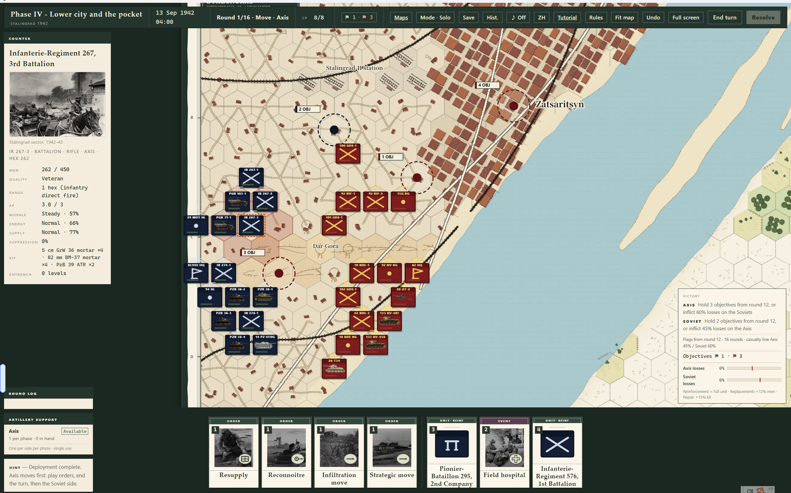

A card-driven wargame, computed by the machine
This is a wargame first: hexes, ZOC, line of fire, stacking, supply, morale, fieldworks and combined arms. It is card-driven second: your orders are a hand of cards, not a menu. You may know what you want to do, but this hour of the battle only lets you do so much.
The computer resolves the work that would stop a tabletop game — line of fire, range, terrain, stacking, supply traces, casualties, vehicles, morale, artillery sheaves and fieldworks — faster, smoother and more consistently, without giving up the detail.
A complete AI, not a scripted opponent
The AI plays the same game: same decks, same cards, same command points, same combat rules. It does not read your hand. It builds legal actions and evaluates objectives, terrain, stacking, supply, ZOC, fieldworks and threat; it prepares artillery, suppresses positions, uses observed fire, combines arms before an assault, and focuses fire on guns and broken remnants.
Four ways to play
What is in the playtest
- Four Stalingrad boards: Mamayev Kurgan, the balka/factory belt, city centre and crossings, lower city and pocket
- 216 m hexes, company/battalion counters, about one hour per round
- Three decks: movement, attack and special; 4 normal + 3 special cards per phase; specials carry into the attack phase
- ZOC, infiltration move, artillery fire missions, fieldworks, encirclement supply cut
- Complete AI with four difficulty levels; solo, hot-seat and LAN PVP
- Save/load, in-game rules and tutorial; Chinese and English UI


中文
一款以斯大林格勒 1942 为背景的卡驱六角格兵棋免费体验版。连/营级单位，216 米一格，一回合约一小时。你通过一手命令牌和有限指挥点来指挥，而不是靠一张完美计划表。
这是兵棋：六角格、ZOC、视线、堆叠、补给、士气、工事、合同作战。也是卡驱：命令是一手牌，不是菜单。计算机负责视线、射程、地形、堆叠、补给、伤亡、载具、士气、炮兵弹着与工事结算，比手工查表更快、更顺、更一致，同时保留桌游兵棋的细节深度。
AI 使用同样的牌库、卡牌、指挥点和战斗规则，不偷看手牌；会评估目标、地形、堆叠、补给、ZOC、工事和威胁，会炮火准备、压制、观察射击、组织合同作战。四档难度同时改变规划深度与 CP。
四种方式：单人推演、人机对战、本机热座、局域网对战。局域网为本地网络房间，非互联网匹配，不需要账号。